Três tabelas fato com dimensões compartilhadas, 16 consultas analíticas e um painel de indicadores sobre rendimento em disciplinas, trajetória dos alunos e indicadores institucionais (INEP e TCU).
dw-indicadores-academicosComo este relatório foi produzido. O SQL da seção 5 é copiado de sql/05_consultas.sql no momento de gerar o PDF. As figuras da seção 6 são capturadas do painel interativo do projeto, e um script (dashboards/validar.py) confere, linha a linha, que o painel devolve os mesmos resultados das 16 consultas. Os números citados no texto foram medidos no MySQL 8 sobre a carga atual.
O domínio é a gestão acadêmica da graduação: três cursos de um mesmo centro (Ciência da Computação, Engenharia da Computação e Sistemas de Informação), observados de 2018.1 a 2025.2. Há dois processos de negócio no centro do modelo:
O DW serve à coordenação de curso e à pró-reitoria de graduação. Ele mostra onde os alunos reprovam (disciplinas, turmas, momentos da trajetória), quem fica pelo caminho (coortes, grupos de ingresso e renda) e como o curso se sai nos indicadores pelos quais a instituição é avaliada externamente: os indicadores de trajetória do INEP (TAP, TCA e TDA) e a Taxa de Sucesso na Graduação, usada pelo TCU e na matriz orçamentária.
A inspiração foram os observatórios de dados indicados na disciplina. Do painel público Indicadores Graduação da UFPB (Metabase) veio o modelo de fato de vínculo discente com filtros conformados. Do Relatório Analítico sobre Controle de Evasão e Retenção da UFRPE vieram as fórmulas de evasão e de sucesso e a ideia de mostrar ingressantes, concluintes e desvinculados no mesmo gráfico. Com essas referências, adotamos um critério para consulta boa: ela tem denominador (é taxa, não contagem bruta), usa a população certa como base, declara a aditividade do que soma e escolhe o gráfico pela forma do dado.
As 16 perguntas abaixo orientaram o esquema: cada coluna que acrescentamos aos diagramas originais existe porque alguma delas precisava. C1 a C12 estão em ordem de prioridade para a gestão. C13 a C16 foram acrescentadas nesta etapa para cobrir a matriz curricular, os indicadores institucionais e a medição da evasão.
| # | Pergunta | Quem usa | Fato |
|---|---|---|---|
| C1 | Em cada semestre, quais são as 10 disciplinas com maior taxa de reprovação, separando reprovação por nota e por falta? | Coordenação: monitoria e frequência | Agregada |
| C2 | Em cada turma de ingresso, qual a proporção de alunos que concluíram, continuam ativos ou evadiram? | Coordenação: retenção | Dimensão aluno |
| C3 | A reprovação de beneficiários da assistência estudantil difere da dos não beneficiários ao longo dos semestres? | Assistência estudantil | Matrícula |
| C4 | Como varia a reprovação por nota e por falta conforme os semestres desde o ingresso? | Coordenação: acolhimento | Matrícula |
| C5 | Quais disciplinas têm mais alunos que reprovaram duas ou mais vezes nelas? | Coordenação: gargalos | Matrícula |
| C6 | Como evolui a aprovação das disciplinas críticas de um semestre para outro? | Coordenação e departamentos | Agregada |
| C7 | Como as matrículas das disciplinas críticas se dividem entre as cinco situações finais? | Coordenação e departamentos | Agregada |
| C8 | Em cada turma de ingresso, como reprovação e evasão variam por tipo de cota e faixa econômica? | Pró-reitoria: equidade | Matrícula |
| C9 | Nas ofertas de disciplina, como a reprovação se relaciona com a média de faltas? | Coordenação: frequência | Agregada |
| C10 | Quais turmas ficaram muito acima ou abaixo do histórico da mesma disciplina no curso? | Coordenação: casos atípicos | Agregada |
| C11 | Quanto o tempo de conclusão de cada turma de ingresso se afasta do prazo previsto? | Coordenação: planejamento de oferta | Dimensão aluno |
| C12 | Na mesma disciplina e semestre, como variam aprovação, nota média e tamanho das turmas de diferentes professores? | Colegiado: conversa pedagógica | Agregada + ponte |
| C13 | Quanto as matrículas estão atrasadas em relação ao período previsto da disciplina na matriz? | Coordenação: fluxo curricular | Matrícula + matriz |
| C14 | Qual a Taxa de Sucesso na Graduação de cada curso por ano? | Pró-reitoria: TCU e orçamento | Dimensão aluno |
| C15 | Ano a ano, que parte de cada turma de ingresso permanece, concluiu ou desistiu (TAP, TCA, TDA)? | Pró-reitoria: indicadores INEP | Snapshot |
| C16 | Quanto a fórmula de evasão anual que as instituições publicam (Instituto Lobo) se afasta da evasão medida pela coorte? | Pró-reitoria: leitura dos indicadores | Dimensão aluno |
O banco dw_academico (MySQL 8) tem três tabelas fato que compartilham as mesmas dimensões. Cada fato responde a um tipo de pergunta: a fato de matrícula (uma linha por aluno em cada oferta) responde perguntas sobre alunos; a fato agregada (uma linha por oferta e curso) responde perguntas sobre turmas; e o snapshot do vínculo (uma linha por aluno e semestre) responde perguntas sobre permanência ao longo do tempo. As duas últimas são derivadas em SQL a partir de dados já carregados, sem sortear nada novo.
Linhas contínuas: chaves estrangeiras dos fatos. Tracejadas: ligações entre dimensões (o aluno aponta para a sua coorte, a coorte para o curso, a matriz liga curso e disciplina, e a ponte liga a oferta aos professores). A fato agregada é derivada da fato de matrícula, e o snapshot é derivado de dim_aluno. O esquema completo, com todas as colunas, está em docs/dbml/v2_esquema.pdf, gerado de v2_esquema.dbml.
| Tabela | Linhas | Conteúdo |
|---|---|---|
dim_data | 16 | Semestres letivos de 2018.1 a 2025.2 |
dim_curso | 3 | CC, EC e SI, com o prazo previsto de cada um (9, 10 e 8 semestres) |
dim_disciplina e curso_disciplina | 42 e 104 | Disciplinas e a matriz curricular: em que período cada disciplina fica em cada curso |
dim_professor | 40 | Docentes, com pseudônimos |
dim_turma_aluno | 72 | Turmas de ingresso (coortes): 3 cursos × 24 semestres de 2014.1 a 2025.2 |
dim_aluno | 1.444 | 412 ativos, 372 concluintes e 660 evadidos ao fim da base |
dim_turma_disciplina | 848 | Ofertas de disciplina no semestre; 166 com mais de um professor |
fato_professor_aluno | 29.474 | Uma linha por matrícula de aluno em oferta |
fato_professor_disciplina | 2.140 | Uma linha por oferta e curso, derivada da fato de matrícula |
fato_vinculo_semestre | 7.834 | Uma linha por aluno e semestre de vínculo, derivada de dim_aluno |
Os nomes das duas primeiras fatos vêm dos diagramas originais da equipe e foram mantidos para não quebrar as entregas anteriores. Apesar do nome, fato_professor_aluno não tem chave de professor: o vínculo com docentes passa pela oferta e pela ponte.
A classificação segue a definição usual: uma medida é ADITIVA quando pode ser somada por qualquer dimensão; SEMI-ADITIVA quando pode ser somada por algumas dimensões, mas não ao longo do tempo; e NÃO ADITIVA quando a soma não tem significado em nenhuma dimensão (razões, médias, mínimos, medianas). Colunas que ficam no fato sem serem medidas, como códigos de situação, aparecem como ATRIBUTO (dimensão degenerada).
fato_professor_aluno: matrícula do alunoGrão: uma linha por aluno × oferta de disciplina × curso. É o grão mais fino do modelo, e uma matrícula não se repete quando a turma tem dois ou três professores. Chaves: id_aluno, id_turma_disciplina, id_disciplina, id_curso e id_data. Disciplina, curso e semestre poderiam ser obtidos pela oferta, mas foram repetidos no fato para que cada consulta faça uma junção direta com a dimensão. Um teste garante que eles concordam com a oferta.
| Coluna | Tipo | O que mede e como agregar |
|---|---|---|
| contagem de linhas | ADITIVA | Cada linha é uma matrícula, então COUNT(*) dá o número de matrículas em qualquer recorte. Contar alunos exige COUNT(DISTINCT id_aluno), que não é aditivo: o mesmo aluno aparece em vários semestres e disciplinas. |
quantidade_faltas | ADITIVA | Faltas da matrícula. A soma por aluno, disciplina ou semestre faz sentido. É nula no trancamento. |
ch_adquirida | ADITIVA | Carga horária integralizada: igual à da disciplina se aprovado, zero caso contrário. A soma por aluno dá a carga já cumprida. |
nota_final | NÃO ADITIVA | Nota de 0 a 10. Somar notas não significa nada. A média de um recorte é SUM(nota)/COUNT(nota), recalculada a partir das linhas, nunca uma média de médias. |
qtd_tentativas | NÃO ADITIVA | Número da tentativa do aluno naquela disciplina (1 a 8). É um ordinal: interessa o máximo ou a distribuição, não a soma. |
periodo_aluno | ATRIBUTO | Semestres desde o ingresso (1 no primeiro). Calculado na carga e usado para agrupar (C4, C13), não para somar. |
situacao_final | ATRIBUTO | Uma das cinco situações. Dimensão degenerada: vira medida aditiva quando contada, como em SUM(situacao_final = 'REPROVADO_NOTA'). |
bolsista_no_semestre | ATRIBUTO | Indica se o aluno recebia assistência naquele semestre. Fica no fato, e não em dim_aluno, porque muda de um semestre para outro (seção 3.3). |
fato_professor_disciplina: resultado da oferta (agregada)Grão: uma linha por oferta de disciplina × curso dos alunos × semestre. Não há aluno individual. A tabela não é carregada de fora: sql/03_carga_fato_agregada.sql a deriva da fato de matrícula com GROUP BY, e três testes conferem que as duas estrelas têm exatamente as mesmas matrículas, a mesma soma de notas e a mesma soma de faltas.
| Colunas | Tipo | O que medem e como agregar |
|---|---|---|
qtd_matriculados | ADITIVA | Matrículas da oferta. Fecha exatamente com a soma das cinco situações abaixo (teste de validação). |
qtd_aprovacoes_nota, qtd_aprovacoes_final, qtd_reprovacoes_nota, qtd_reprovacoes_faltas, qtd_trancamentos | ADITIVAS | Contagens por situação. São os numeradores de todas as taxas. O denominador “matrículas com resultado” é qtd_matriculados − qtd_trancamentos. |
soma_notas_finais, qtd_notas_validas, soma_faltas, qtd_faltas_validas | ADITIVAS | Numerador e denominador das médias. São elas que tornam as médias reagregáveis: nota média de qualquer recorte = SUM(soma_notas_finais) / SUM(qtd_notas_validas) (C9, C12). |
qtd_nota_0_2_9, qtd_nota_3_6_9, qtd_nota_7_7_9, qtd_nota_8_8_9, qtd_nota_9_10 | ADITIVAS | Histograma de notas por faixa. Fecham com qtd_notas_validas (teste). |
qtd_bolsistas_aprovados_nota, …_aprovados_final, …_reprovados_nota, …_reprovados_faltas | ADITIVAS | As mesmas contagens restritas a bolsistas. Nunca excedem a contagem total da situação (teste). |
media_notas, media_faltas | NÃO ADITIVAS | Razões prontas por oferta. Não se somam e não se tira média delas. As consultas usam as somas acima, e estas colunas ficam como conferência (teste: media_notas = soma/qtd). |
menor_notas, maior_notas | NÃO ADITIVAS | Não se somam, mas reagregam com a função certa: o mínimo de um recorte é o MIN dos mínimos, e o máximo é o MAX dos máximos. |
mediana_notas | NÃO ADITIVA | Não aditiva e não recuperável: a mediana de um recorte não sai das medianas das ofertas por nenhuma combinação. Só vale no grão exato da oferta. |
fato_vinculo_semestre: snapshot periódico do vínculoGrão: uma linha por aluno × semestre, do ingresso (ou de 2018.1, primeiro semestre da base) até o semestre da saída, inclusive. Nos semestres anteriores à saída, o aluno está ATIVO. O semestre da saída traz a situação final. Quem continua ativo tem linha até 2025.2. A tabela é derivada de dim_aluno por sql/07_snapshot_vinculo.sql e foi criada nesta etapa para registrar a história do vínculo, que a dimensão guarda só como retrato final (seção 3.3).
| Coluna | Tipo | O que mede e como agregar |
|---|---|---|
qtd_ativo | SEMI-ADITIVA | 1 se o aluno está ativo no semestre. É um estoque: soma por curso, coorte ou grupo de alunos, mas não ao longo do tempo. Somar 2024.1 e 2024.2 contaria duas vezes quem estava ativo nos dois. Por isso C15 lê os ativos só no último semestre de cada ano. |
qtd_concluiu, qtd_evadiu | ADITIVAS | 1 apenas no semestre da conclusão ou da evasão. São fluxos: somar ao longo do tempo é correto e dá o acumulado de saídas (TCA e TDA em C15). Somadas sobre a tabela inteira, coincidem com dim_aluno (teste). |
periodo_aluno | ATRIBUTO | Semestres desde o ingresso, com a mesma definição da fato de matrícula. |
situacao_vinculo | ATRIBUTO | Situação naquele semestre. Dimensão degenerada. |
Por que estoque e fluxo na mesma tabela. A distinção entre semi-aditivo e aditivo aparece aqui na prática: quantos alunos estão ativos é uma foto do semestre, e quantos saíram é um movimento que se acumula. As duas medidas juntas garantem uma identidade que testamos em toda turma de ingresso e todo ano: ativos no fim do ano + concluintes acumulados + evadidos acumulados = ingressantes. É a identidade TAP + TCA + TDA = 100% do INEP.
| Aditivas | Semi-aditivas | Não aditivas |
|---|---|---|
Matrícula: contagem de linhas, quantidade_faltas, ch_adquiridaAgregada: qtd_matriculados, as 5 contagens de situação, as 5 faixas de nota, as 4 contagens de bolsistas, soma_notas_finais, qtd_notas_validas, soma_faltas, qtd_faltas_validasSnapshot: qtd_concluiu, qtd_evadiu |
Snapshot: qtd_ativo (estoque: não soma no tempo)Nas consultas: contagem de alunos distintos ( COUNT(DISTINCT)) se comporta da mesma forma: não se soma entre semestres |
Matrícula: nota_final, qtd_tentativasAgregada: media_notas, media_faltas, menor_notas, maior_notas (reagregam com MIN e MAX), mediana_notas (irrecuperável)Nas consultas: todas as taxas (aprovação, reprovação, evasão, TSG, TAP, TCA, TDA) e o atraso médio. São sempre calculadas como soma do numerador ÷ soma do denominador |
Para cada dimensão: o papel no modelo, os campos, os valores especiais (nulos e casos de borda que a análise precisa conhecer) e o tipo de SCD (slowly changing dimension) de cada atributo. Usamos três tipos: Tipo 0 (o valor é fixado na origem e não muda), Tipo 1 (uma mudança sobrescreve o valor, sem histórico) e Tipo 2 (uma mudança cria uma nova versão da linha). As escolhas estão justificadas na seção 3.3.
dim_data: semestre letivo · 16 linhas| Campo | Descrição e valores | SCD |
|---|---|---|
id_data (PK) | Chave inteligente ano × 10 + semestre, por exemplo 20252. Escolha consciente, discutida na seção 4. | Tipo 0 |
ano, semestre | 2018 a 2025; semestre 1 ou 2. | Tipo 0 |
ano_semestre | Rótulo “2025.2”, único. | Tipo 0 |
Valores especiais: o calendário começa em 2018.1, mas as coortes começam em 2014.1. As 24 coortes de 2014 a 2017 não têm linha correspondente nesta dimensão, por isso dim_turma_aluno guarda ano e semestre de ingresso como atributos próprios. Papéis: a mesma dimensão é usada como semestre da matrícula (fatos), semestre da oferta (dim_turma_disciplina.id_data) e semestre da saída (dim_aluno.id_data_saida).
dim_curso: curso de graduação · 3 linhas| Campo | Descrição e valores | SCD |
|---|---|---|
id_curso (PK), codigo_curso | Chave substituta e código de negócio: CC, EC, SI. | Tipo 0 |
nome_curso | Nome por extenso. | Tipo 1 |
departamento, centro, campus | Hierarquia organizacional para roll-up. Hoje os três cursos têm o mesmo valor (“Centro de Informatica”, “Recife”). | Tipo 1 |
semestres_previstos | Prazo previsto do curso: CC 9, EC 10, SI 8. Base de C11 e do denominador da TSG (C14). | Tipo 1 |
Valores especiais: a hierarquia existe no esquema, mas os três níveis são constantes, então o drill-down de campus a curso não mostra variação nestes dados. Ponto de atenção de SCD: se o projeto pedagógico mudar o prazo, a TSG de turmas antigas deve usar o prazo vigente no ingresso. Com Tipo 1, a mudança reescreveria a história; nesse caso o certo seria Tipo 2 ou guardar o prazo na coorte.
dim_disciplina · 42 linhas e curso_disciplina (matriz curricular) · 104 linhas| Campo | Descrição e valores | SCD |
|---|---|---|
id_disciplina (PK), codigo_disciplina | Chave substituta e código de negócio, como MAT101 ou CMP101. | Tipo 0 |
nome_disciplina | Nome, sem acentos na base. | Tipo 1 |
carga_horaria, creditos | 60 h (37 disciplinas), 90 h (4) ou 120 h (1); 4, 6 ou 8 créditos. | Tipo 1 |
curso_disciplina.periodo_curricular | Período em que a disciplina fica na matriz de cada curso. A chave é (curso, disciplina), porque a mesma disciplina pode ficar em períodos diferentes em cada curso. Base de C13. | Tipo 1 |
Valores especiais: uma disciplina que um curso não oferece simplesmente não tem linha na matriz; não há período zero. Um teste garante que toda matrícula está na matriz do curso do aluno. Limite: dim_aluno.versao_curriculo distingue os currículos 2018 e 2024, mas a matriz tem uma única versão. Versionar a matriz por currículo seria o próximo passo.
dim_professor: docente · 40 linhas| Campo | Descrição e valores | SCD |
|---|---|---|
id_professor (PK), matricula_professor | Chave substituta e matrícula funcional (P0001…). | Tipo 0 |
nome_professor | Pseudônimo (“Professor 01”). | Tipo 1 |
dim_turma_aluno: turma de ingresso (coorte) · 72 linhas| Campo | Descrição e valores | SCD |
|---|---|---|
id_turma_aluno (PK) | Uma linha por curso × semestre de ingresso (3 × 24). | Tipo 0 |
id_curso | Curso da coorte (ligação com dim_curso). | Tipo 0 |
ano_ingresso, semestre_ingresso, ano_semestre_ingresso | 2014.1 a 2025.2. | Tipo 0 |
Valores especiais: as coortes de 2014 a 2017 são truncadas à esquerda: a base só contém os alunos delas que ainda estavam no curso em 2018. Uma taxa de evasão dessas coortes seria subestimada, por isso C2, C8, C11, C14 e C15 só usam coortes a partir de 2018. Apesar do nome, a tabela não é a turma da disciplina cursada; é a coorte de ingresso.
dim_aluno: aluno · 1.444 linhas| Campo | Descrição e valores (contagens na base) | SCD |
|---|---|---|
id_aluno (PK) | Chave substituta. | — |
numero_matricula | Chave natural, única (M000001…). | Tipo 0 |
id_turma_aluno | Coorte de ingresso. | Tipo 0 |
nome | Pseudônimo (“Aluno 00001”). | Tipo 1 |
forma_ingresso | SISU 1.301, Transferência 73, Reintegração 47, Portador de diploma 23. | Tipo 0 |
tipo_cota | Ampla concorrência 678, Escola pública 234, Escola pública e renda 256, Escola pública, renda e PPI 103, Pessoa com deficiência 30. Nulo em 143 alunos. | Tipo 0 |
faixa_economica | Até 1,5 SM 464, 1,5 a 3 SM 426, 3 a 5 SM 302, Acima de 5 SM 252. Registrada no ingresso. | Tipo 0 |
versao_curriculo | 2018 (1.179 alunos, ingresso até 2023) ou 2024 (265, ingresso a partir de 2024). | Tipo 1 |
situacao_vinculo | ATIVO 412, CONCLUIDO 372, EVADIDO 660, ao fim da base. | Tipo 1 |
id_data_saida | Semestre da conclusão ou da evasão. Nulo exatamente nos 412 ativos. | Tipo 1 |
Valores especiais de dim_aluno. (1) tipo_cota é nulo para os 143 alunos que não entraram pelo SISU (73 + 47 + 23). O nulo significa “não se aplica”, e não “desconhecido”. A C8 e o painel o exibem como “Outras formas de ingresso”. A boa prática seria gravar esse rótulo na própria dimensão, para que nenhuma consulta precise lembrar do COALESCE. (2) id_data_saida nulo significa “ainda ativo”, e um teste garante que ele é nulo se e somente se a situação é ATIVO.
dim_turma_disciplina: oferta de disciplina · 848 linhas| Campo | Descrição e valores | SCD |
|---|---|---|
id_turma_disciplina (PK) | Chave substituta. Única por (disciplina, semestre, código da turma). | Tipo 0 |
id_disciplina, id_data | Disciplina ofertada e semestre da oferta. | Tipo 0 |
codigo_turma | A, B ou C. | Tipo 0 |
horario | Texto livre, por exemplo “TER 10-12; QUI 08-10”. | Tipo 1 |
id_professor_1, _2, _3 | Até três docentes, como papéis da mesma dim_professor. Professor 2 é nulo em 682 ofertas e professor 3 em 811. Só o professor 1 é sempre preenchido. | Tipo 1 |
Ponte vw_turma_professor: transforma os três papéis em linhas (oferta, professor, papel 1 a 3, peso = 1/n). São 1.051 pares, e os nulos acima simplesmente não geram linha. Um teste garante que os pesos de cada oferta somam 1.
As chaves estrangeiras obrigatórias dos fatos são NOT NULL, e a carga sintética nunca produz dimensão ausente, por isso não criamos uma linha “-1 Desconhecido” nas dimensões. Os três casos de chave opcional (professores 2 e 3 da oferta e semestre de saída do aluno) ficam fora dos fatos e são tratados como nulo com significado definido. Numa carga real, com origem sujeita a falhas, adotaríamos o membro desconhecido nas dimensões referenciadas pelos fatos.
| Atributo | Tipo | Justificativa |
|---|---|---|
| Chaves de negócio, coorte, forma de ingresso, cota, faixa econômica, calendário | Tipo 0 | São fatos da origem: o aluno entra uma vez, por uma via, numa coorte. A faixa econômica é a declarada no ingresso; se fosse acompanhada a cada semestre, iria para o fato, como a bolsa. |
| Nomes, carga horária, horário, prazo previsto, hierarquia do curso | Tipo 1 | Correções de cadastro não mudam a análise. A exceção a vigiar é semestres_previstos (seção 3.1). |
situacao_vinculo, id_data_saida | Tipo 1, com história no snapshot | O vínculo muda no máximo uma vez por aluno (ATIVO → CONCLUIDO ou EVADIDO), e o semestre da mudança já fica em id_data_saida. A dimensão guarda o retrato final, e a história completa, semestre a semestre, está em fato_vinculo_semestre. |
| Assistência estudantil | No fato | Muda de um semestre para outro. Como dimensão, exigiria uma versão por semestre (Tipo 2 com mudança rápida); por isso fica como bolsista_no_semestre na fato de matrícula, no grão em que acontece. |
Por que não usamos Tipo 2 no vínculo. Avaliamos versionar dim_aluno (chave substituta por versão, data_inicio, data_fim, versão atual). Isso geraria no máximo duas versões por aluno, para guardar a mesma informação que situacao_vinculo + id_data_saida já guardam, e obrigaria a reescrever as junções de sete consultas. Além disso, o Tipo 2 sozinho não responde à pergunta que importa (“quantos estavam ativos em 2021.2?”) sem expandir as versões por semestre. O snapshot periódico entrega essa expansão pronta, com estoque e fluxo separados, e é ele que viabiliza TAP, TCA e TDA (C15). A dimensão não precisa versionar o que o fato de snapshot já historiza.
| Passo | Estrela da matrícula | Estrela da oferta (agregada) | Estrela do vínculo (snapshot) |
|---|---|---|---|
| 1. Processo de negócio | Matrícula em disciplina e seu resultado | O mesmo processo, visto pela turma | Permanência do aluno no curso |
| 2. Grão | Aluno × oferta × curso (o mais fino disponível) | Oferta × curso × semestre | Aluno × semestre de vínculo |
| 3. Dimensões | Data, curso, disciplina, aluno, oferta | Data, curso, disciplina, oferta (+ professor pela ponte) | Data, curso, aluno, coorte |
| 4. Fatos | Nota, faltas, carga horária, situação | Contagens por situação, somas e histogramas | Ativo (estoque), concluiu e evadiu (fluxos) |
| Tipo de fato | Transacional | Agregada derivada | Snapshot periódico |
As três estrelas usam as mesmas tabelas de dimensão, com as mesmas chaves e os mesmos rótulos. Por isso um resultado de turma (agregada) e um resultado de aluno (matrícula) podem ser cruzados pelo mesmo curso e semestre sem conversão: são dimensões conformadas.
| Fato \ dimensão | data | curso | disciplina | oferta | professor | aluno | coorte |
|---|---|---|---|---|---|---|---|
| Matrícula | ✓ | ✓ | ✓ | ✓ | via oferta | ✓ | via aluno |
| Oferta (agregada) | ✓ | ✓ | ✓ | ✓ | via ponte | — | — |
| Vínculo (snapshot) | ✓ | ✓ | — | — | — | ✓ | ✓ |
| Técnica | Onde e por quê |
|---|---|
| Grão mais fino como base | A fato de matrícula é atômica. Tudo o mais é derivado dela ou de dim_aluno, então nenhum número existe em duas versões. |
| Fato agregada derivada, com reconciliação | fato_professor_disciplina sai da fato de matrícula por GROUP BY (sql/03). Três testes provam que as estrelas fecham: mesmas matrículas, soma de notas e soma de faltas. |
| Snapshot periódico | fato_vinculo_semestre materializa o vínculo semestre a semestre, separando estoque (semi-aditivo) de fluxo (aditivo). Substitui o Tipo 2 na dimensão do aluno (seção 3.3). |
| Numerador e denominador em vez de razões | A agregada guarda contagens e somas (soma_notas_finais, qtd_notas_validas…), e toda taxa é calculada na consulta como soma ÷ soma. Isso evita a média de médias e torna qualquer recorte reagregável. |
| Dimensão com papéis (role-playing) | dim_professor aparece três vezes na oferta (professores 1, 2 e 3). dim_data faz os papéis de semestre da matrícula, da oferta e da saída do aluno. |
| Tabela ponte com fator de ponderação | A view vw_turma_professor resolve a relação muitos-para-muitos entre oferta e professor, com peso = 1/n para que somas por docente não contem a mesma turma duas vezes. |
| Dimensão degenerada | situacao_final, periodo_aluno e qtd_tentativas moram no fato, sem tabela própria: descrevem a matrícula e não têm outros atributos. |
| Atributo que muda rápido vai para o fato | A assistência estudantil varia por semestre, por isso é bolsista_no_semestre na matrícula, e não um atributo versionado do aluno. |
| Dimensões ligadas entre si (outrigger) | dim_aluno → dim_turma_aluno → dim_curso: a coorte é reutilizada por C2, C11 e C15 sem repetir seus atributos em cada aluno. É um floco de neve consciente e limitado. |
| Tabela de cobertura | curso_disciplina registra que disciplina pertence a que período de cada curso, mesmo sem matrícula. É ela que permite medir o atraso (C13). |
| Chaves estrangeiras redundantes no fato | Disciplina, curso e semestre estão na matrícula, embora sejam dedutíveis da oferta, para que cada consulta faça junção direta. Um teste garante a coerência. |
| Chave inteligente de data | id_data = ano × 10 + semestre. A bibliografia recomenda chave substituta pura; mantivemos porque a chave é legível, estável e ordenável, e trocá-la tocaria todas as tabelas. É uma escolha declarada. |
| Carga reprodutível e testada | Gerador com semente fixa → DDL → dados → agregada → ponte → snapshot → 20 testes (scripts/carregar.sh). Reexecutar reproduz a base byte a byte. |
Convenções de todas as consultas: as taxas de aprovação e reprovação usam como denominador as matrículas com resultado, isto é, sem trancamentos, salvo quando indicado. Toda divisão protege o denominador zero com NULLIF, de modo que um indicador indefinido aparece vazio, nunca como 0%. Toda taxa é calculada como soma do numerador ÷ soma do denominador. As consultas rodam no MySQL 8 e estão em sql/05_consultas.sql.
Soma as contagens da fato agregada por semestre, curso e disciplina (HAVING descarta quem não teve matrícula com resultado). ROW_NUMBER() numera as disciplinas dentro de cada semestre e curso pela taxa total, com o código da disciplina como desempate. A consulta externa fica com as dez primeiras e separa a taxa por nota da taxa por falta.
Lê a dimensão do aluno, sem fato: para cada coorte, conta ingressantes e a parcela em cada situação final. O filtro ano_ingresso >= 2018 exclui as coortes truncadas (seção 3.1).
Usa a fato de matrícula porque a bolsa é atributo do semestre. Agrupa por curso, semestre e grupo, e conta como denominador só as matrículas com resultado.
Agrupa as matrículas por periodo_aluno, juntando do 9º em diante numa categoria, e separa reprovação por nota e por falta. Junta aluno e coorte para permitir o filtro por turma de ingresso.
A CTE monta o histórico de cada aluno em cada disciplina (quantas vezes reprovou, de 2018.1 a 2025.2). A consulta externa mede, por disciplina, a fração de alunos que reprovaram duas ou mais vezes, uma informação que a taxa semestral isolada esconde.
A CTE criticas escolhe uma lista fixa: as dez disciplinas com maior reprovação na base inteira. Fixar a lista permite comparar as mesmas disciplinas ao longo do tempo. A consulta externa calcula a aprovação de cada oferta delas.
Mesma lista de C6. Aqui o denominador são todas as matrículas, incluindo trancamentos, para que as cinco situações somem 100%.
Cruza matrícula e aluno. A reprovação usa matrículas; a evasão usa alunos distintos (COUNT(DISTINCT)), porque um aluno tem muitas matrículas. O nulo de cota é rotulado como “Outras formas de ingresso”.
Uma linha por oferta e curso na fato agregada. A média de faltas sai de soma_faltas / qtd_faltas_validas, que são aditivas, e não da coluna pronta media_faltas.
Para cada oferta com ao menos 10 matrículas com resultado, uma subconsulta correlacionada calcula a taxa histórica da mesma disciplina no mesmo curso, somando reprovações e matrículas de todos os semestres anteriores (ponderada, não média de taxas). O resultado é a diferença em pontos percentuais.
Para os concluintes de cada coorte, calcula a duração em semestres entre ingresso e saída (ano × 2 + semestre converte o semestre num índice contínuo) e compara com semestres_previstos.
Junta a fato agregada à ponte vw_turma_professor. Uma oferta com dois docentes aparece uma vez para cada um, com a contagem integral da turma: a consulta compara ofertas, não soma docentes. A nota média sai das somas aditivas.
Cruza a fato de matrícula com a matriz (curso_disciplina) pela chave composta curso + disciplina. O atraso de cada matrícula é periodo_aluno − periodo_curricular: quantos semestres depois do previsto o aluno cursou a disciplina. Agrupa por curso, semestre e período da matriz.
TSG(n) = concluintes no ano n ÷ ingressantes das turmas cujo prazo previsto termina no ano n. A CTE previstas encontra, para cada coorte, o semestre em que o prazo termina, juntando com dim_data pelo índice contínuo de semestre (ingresso + prazo − 1). base soma esses ingressantes por curso e ano e registra a coorte mais antiga envolvida, e concluintes conta as conclusões de cada ano. Só entram anos cujas turmas previstas são de 2018 em diante e cobrem os dois semestres do ano.
Usa o snapshot. fluxo soma, por coorte e ano, os ativos apenas no último semestre do ano (estoque semi-aditivo) e todas as conclusões e evasões do ano (fluxos). serie cruza cada coorte com todos os anos desde o ingresso, para que anos sem saída também apareçam, e acumula os fluxos com SUM() OVER (ORDER BY ano). As três taxas dividem pelos ingressantes da turma e somam 100% em todo ano, o que um teste confere.
A fórmula do Instituto Lobo estima a evasão anual só com contagens agregadas: EV(n) = 1 − (M(n) − I(n)) / (M(n−1) − C(n−1)), onde M são as matrículas, I os ingressantes e C os concluintes do ano. As instituições a usam porque nem sempre conseguem acompanhar cada aluno. Nós conseguimos, então dá para comparar a fórmula com a evasão real dos veteranos (os que já estavam no curso antes do ano). A CTE ano_curso conta, por curso e ano, as matrículas como faz o Censo do INEP (cursando ou formado no ano; quem se desvinculou não entra), os ingressantes, os concluintes e os veteranos. LAG() traz o denominador do ano anterior. A consulta externa calcula a fórmula, a coorte e a diferença.
Desenvolvendo a fórmula com essa contagem, o denominador M(n−1) − C(n−1) é exatamente o número de veteranos do ano n, e o numerador soma os veteranos que evadiram mais os calouros que entraram e evadiram no mesmo ano, que não estão no denominador. Por isso a diferença em relação à coorte é exatamente evadidos_calouros / base_veteranos. O painel calcula a fórmula por essa forma simplificada e o SQL pela forma literal; o validar.py confere que as duas coincidem nas 21 linhas. A definição de M importa: se ela incluísse quem evadiu no próprio ano, a fórmula passaria a medir a evasão do ano anterior.
Os gráficos foram gerados pelo painel interativo do projeto (dashboards/painel_academico_interativo.html, um arquivo HTML que funciona sem internet), que recalcula as 16 consultas no navegador a partir das mesmas tabelas. O script dashboards/validar.py executa o SQL da seção 5 e confere que o painel devolve as mesmas linhas, com tolerância de arredondamento de 0,051. As figuras mostram o recorte padrão (todos os cursos e todos os semestres) na versão resumida que o painel usa para impressão. O painel também tem filtros por curso, semestre, coorte e disciplina, e cada consulta pode ser vista como tabela ou exportada em CSV. O repositório traz também um importador que cria as 16 consultas e os painéis no Metabase, e a equipe montou uma versão das consultas C1 a C12 no Looker Studio.
Como ler os resultados. Os dados são sintéticos. Alguns efeitos foram programados no gerador de propósito: disciplinas com dificuldades diferentes, primeiros períodos mais difíceis, notas mais altas em 2020 e 2021 e uma pequena vantagem de habilidade nas faixas de renda mais altas. A cota e a bolsa são sorteadas sem efeito sobre o desempenho. Um padrão nos gráficos é, portanto, a demonstração de que a consulta detecta o que foi simulado, e não uma descoberta sobre a UFPE.
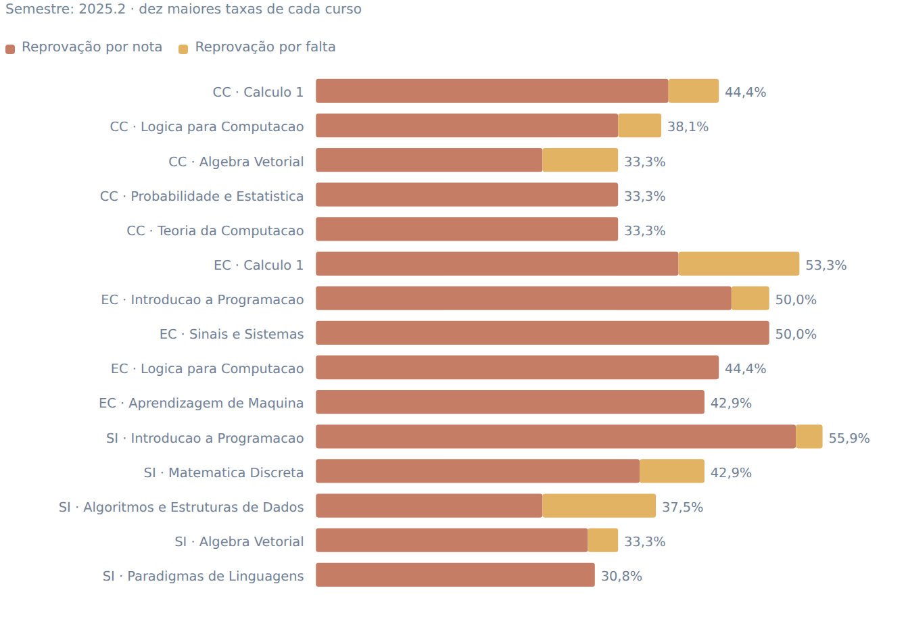
Em 2025.2, as maiores taxas estão em Introdução à Programação no SI (55,9%) e em Cálculo 1 na EC (53,3%) e no CC (44,4%). A parcela por falta é pequena em quase todas. Na base inteira, a reprovação é de 20,5% por nota contra 2,1% por falta, o que indica que a ação prioritária é pedagógica.
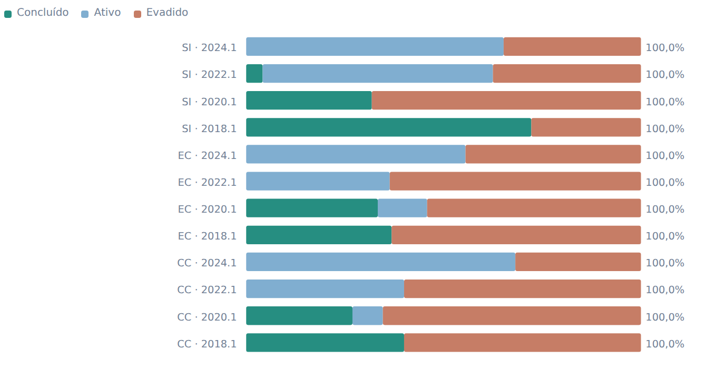
A coorte de 2018.1 já fechou: o SI concluiu 72,2%, o CC 40,0% e a EC, de curso mais longo, 36,8%. Nas coortes seguintes, a parcela ativa cresce porque ainda não houve tempo de concluir: em 2024.1 ela vai de 55,6% a 68,2%. Por isso a evasão de coortes recentes não é uma taxa final. Somando as coortes de 2018 e 2019, o SI concluiu 48,1% e evadiu 51,9%, o CC 41,9% e 57,0%, e a EC 31,8% e 65,9%.
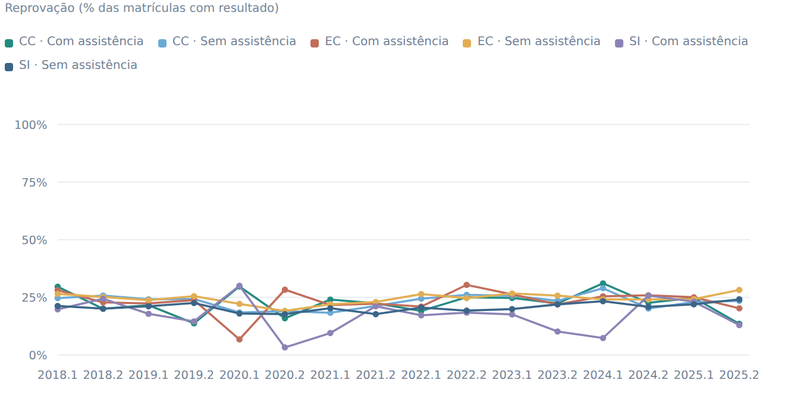
As curvas andam juntas, com os beneficiários um pouco abaixo (21,3% contra 22,8% na base inteira). A diferença é de composição, não de efeito: no gerador a bolsa é sorteada e só começa no 2º semestre, então os calouros, que reprovam mais (C4), estão todos no grupo sem assistência. É o tipo de confusão que o painel avisa no “Como interpretar”.
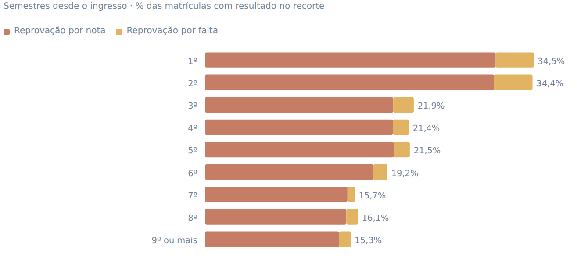
A reprovação por nota é de 30,5% e 30,3% nos dois primeiros semestres e cai para 19,8% no terceiro e 14,1% do nono em diante. A reprovação por falta cai de 4,0% para 1,2%. O começo do curso é o ponto crítico, o que justifica concentrar o acolhimento nele.
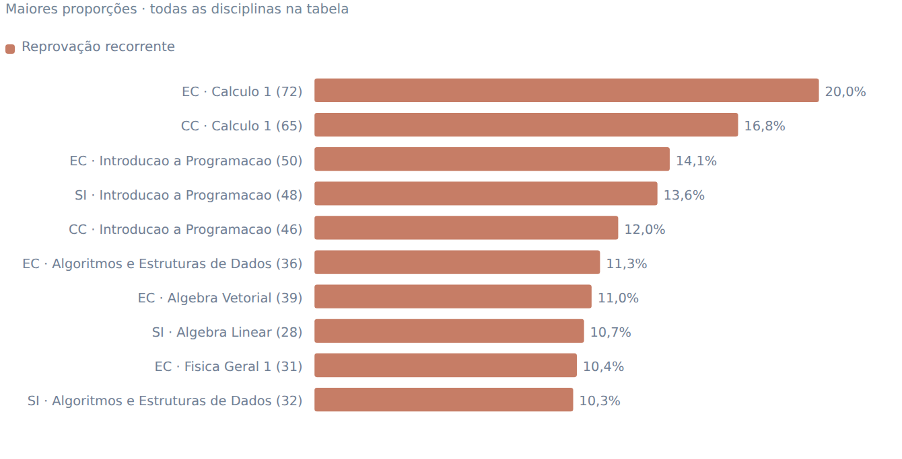
Cálculo 1 lidera na EC (20,0%: 72 de 360 alunos) e no CC (16,8%: 65 de 387). No SI, a primeira é Introdução à Programação (13,6%: 48 de 353). São as mesmas disciplinas de entrada da C1, agora vistas como gargalo persistente.
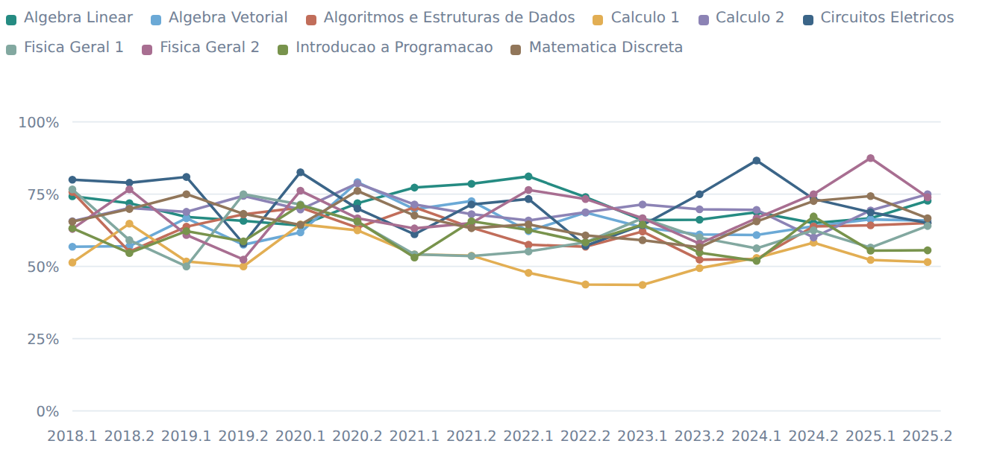
As críticas são as de base matemática e de programação: Cálculo 1 e 2, Álgebra Linear e Vetorial, Física Geral 1 e 2, Matemática Discreta, Circuitos Elétricos, Introdução à Programação e Algoritmos e Estruturas de Dados. Somadas, a aprovação delas passa de cerca de 64% em 2018 e 2019 para 69,1% em 2020, efeito do período pandêmico simulado no gerador, e fica entre 59,5% e 65,4% nos anos seguintes.
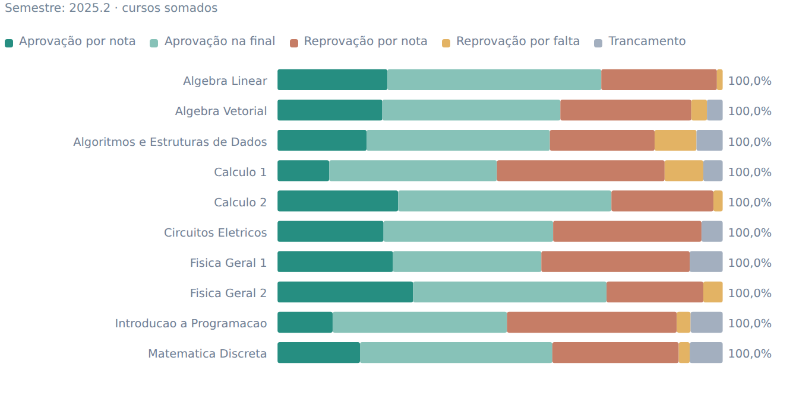
Separar a aprovação na final da aprovação direta mostra quanto da aprovação depende da segunda chance. O trancamento, de 4,0% na base, aparece como parcela própria em vez de sumir do denominador.
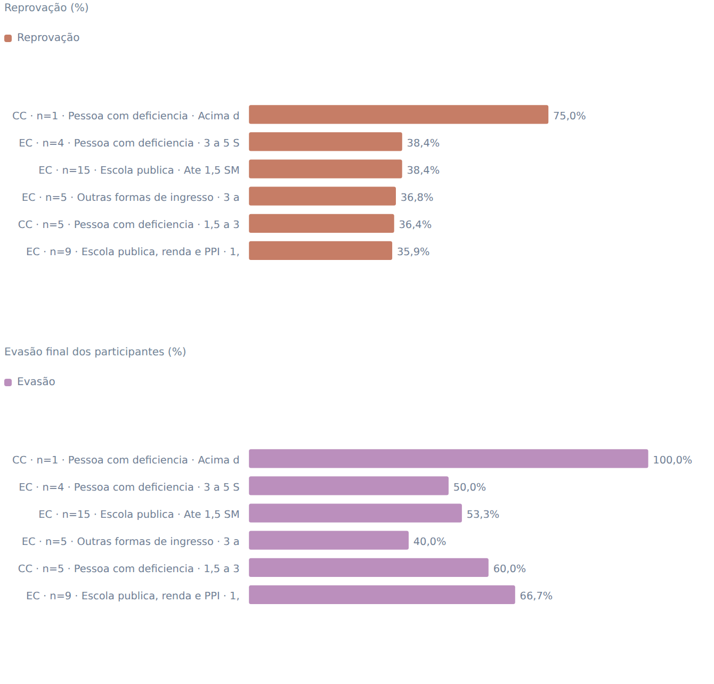
Por faixa de renda, a evasão das coortes desde 2018 vai de 44,2% (acima de 5 SM) a 48,0% (até 1,5 SM), coerente com o efeito de renda programado. Entre cotas, as diferenças (de 39,3% em escola pública e renda a 48,8% em ampla concorrência) são acaso: no gerador a cota não tem efeito nenhum. O gráfico mostra o tamanho de cada grupo justamente para frear essa leitura.
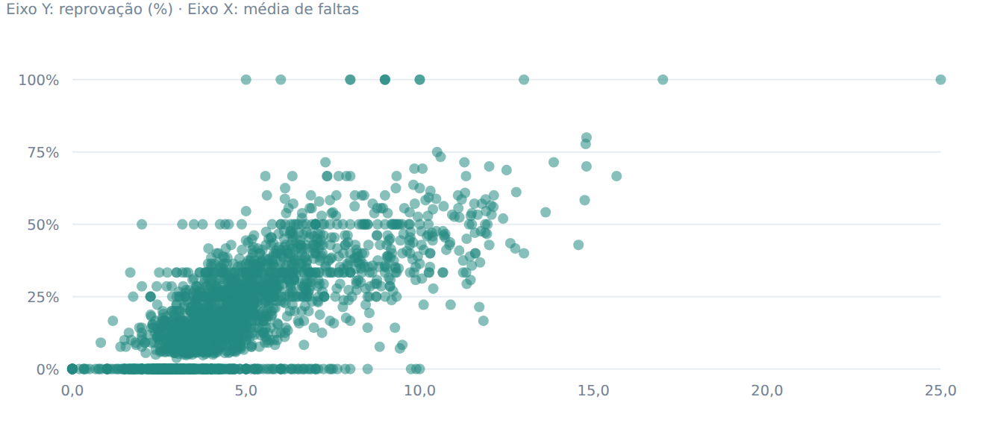
A correlação entre média de faltas e taxa de reprovação nas 2.139 ofertas com faltas registradas é de 0,71. Ofertas acima da nuvem (muita reprovação com pouca falta) apontam problema de aprendizagem, e não de frequência.
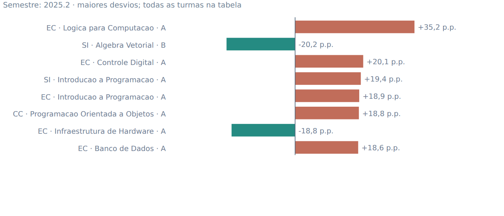
Das 1.516 turmas comparáveis (10 ou mais matrículas e algum histórico), 105 ficaram a 20 pontos ou mais do histórico, com extremos de +36,5 e −33,8 pontos. São casos para investigar o contexto da turma, não um ranking de professores.
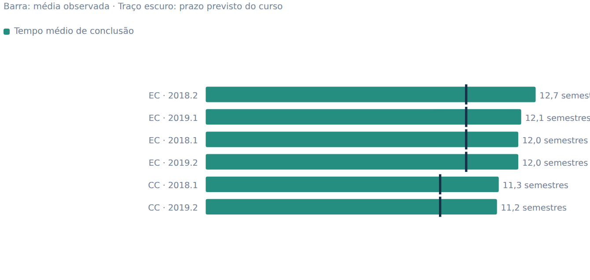
Em média, as coortes concluem 1,5 (EC e SI) a 1,8 semestre (CC) além do prazo. Atenção ao viés de sobrevivência: nas coortes recentes, só os mais rápidos já concluíram, então a média delas parece melhor do que será. C15 complementa essa leitura com a parcela que concluiu.
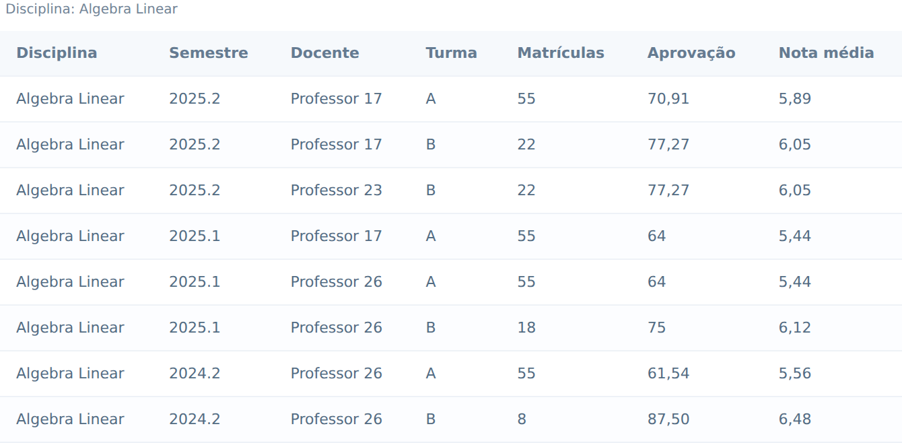
A turma B de 2025.2 aparece duas vezes, uma para cada docente, com os mesmos números: a ponte mostra a oferta para cada professor sem multiplicar matrículas nos totais. Nos dados sintéticos, o professor não influencia o resultado.
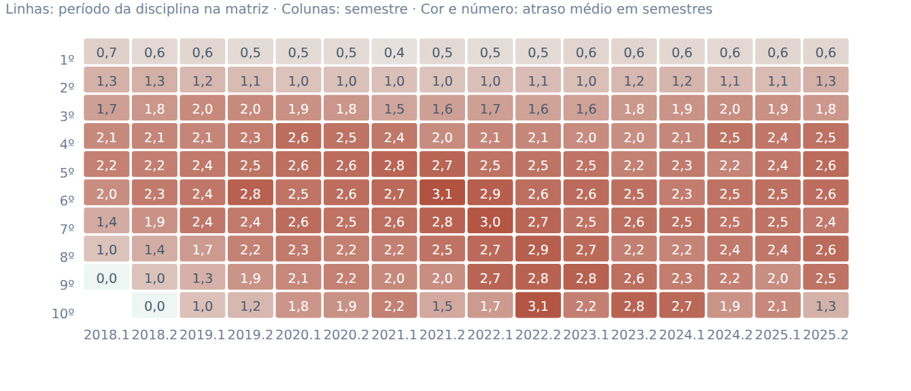
O atraso cresce com o período da matriz: em média 0,6 semestre nas disciplinas do 1º período e cerca de 2,5 nas do 5º ao 7º. Do 4º período em diante, mais de 92% das matrículas são de alunos atrasados, contra 38% no 1º período. O atraso alto também mostra um limite conhecido do gerador: ele não simula alunos que cursam disciplinas extras para recuperar o atraso, e por isso quase ninguém conclui no prazo. A consulta usa pela primeira vez a matriz curricular, que antes só era usada na validação.
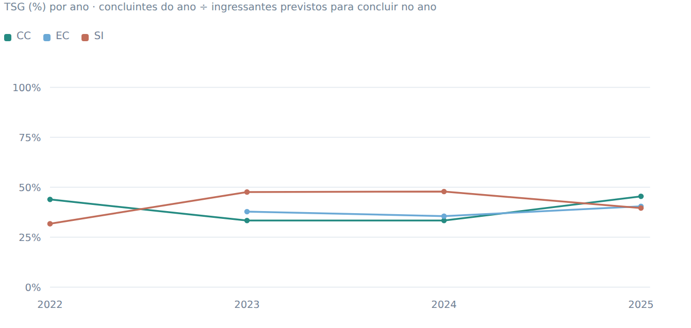
| Curso | 2022 | 2023 | 2024 | 2025 |
|---|---|---|---|---|
| CC (prazo 9) | 43,9% (18/41) | 33,3% (15/45) | 33,3% (18/54) | 45,5% (20/44) |
| EC (prazo 10) | — | 37,8% (17/45) | 35,6% (16/45) | 40,4% (19/47) |
| SI (prazo 8) | 31,7% (13/41) | 47,6% (20/42) | 47,8% (22/46) | 39,6% (19/48) |
A série começa em 2022 (2023 na EC) porque os anos anteriores dependeriam de coortes truncadas. A TSG não é aditiva entre cursos: cada curso tem um prazo e, portanto, um ano-base diferente no denominador. A taxa da instituição se calcula somando concluintes e ingressantes previstos, nunca tirando a média das taxas.
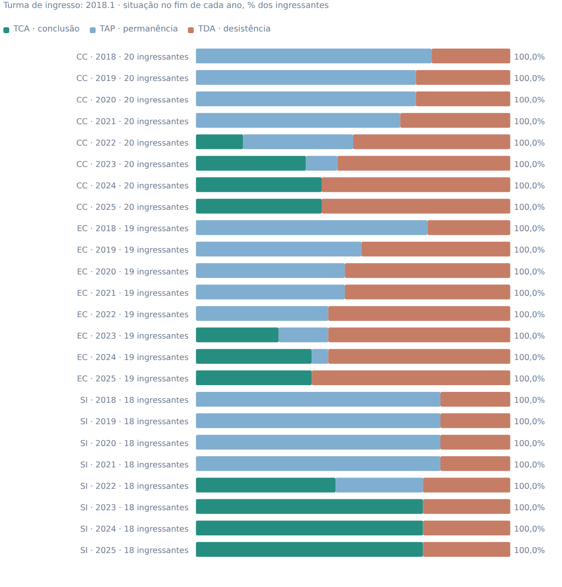
Na turma 2018.1, a desistência aparece logo no primeiro ano (22% a 26%), a conclusão só começa perto do prazo previsto, e a permanência vai a zero quando a turma fecha. A trajetória termina com 72,2% de conclusão no SI, 40,0% no CC e 36,8% na EC. É a mesma informação da C2, agora reconstituída ano a ano, o que só o snapshot do vínculo permite.
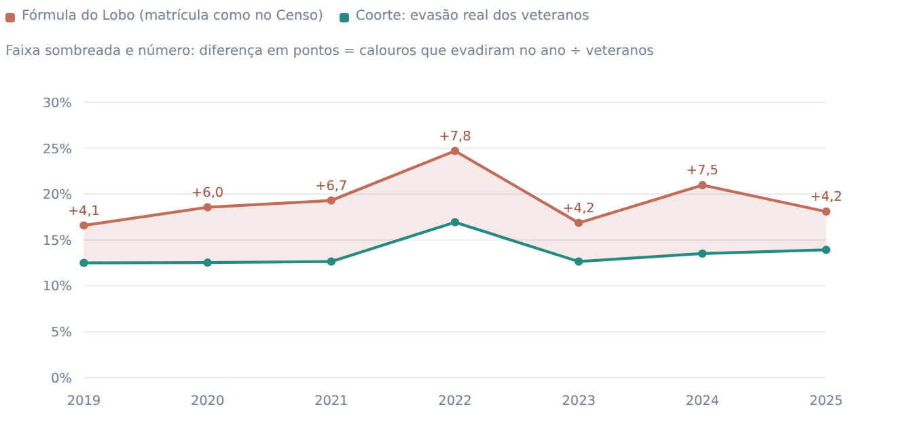
A fórmula superestima a evasão em todos os anos de 2019 a 2025: em média 5,8 pontos, com mínimo de 4,1 (2019) e máximo de 7,8 (2022). Em 2022, por exemplo, ela indica 24,7%, enquanto 16,9% dos veteranos evadiram de fato. A diferença não é ruído: é sempre igual aos calouros que entraram e evadiram no mesmo ano divididos pelos veteranos, e o teste de validação confirma que o denominador da fórmula coincide com a base real de veteranos. Como a evasão no primeiro ano é a mais alta (C4, C15), a fórmula atribui aos veteranos uma evasão que, na verdade, é dos calouros. Só é possível medir esse erro porque o DW guarda a trajetória de cada aluno; um observatório que tem apenas os totais anuais não consegue fazer essa conta.
sql/06_validacao.sql, todos com zero erros. Entre eles: as duas estrelas têm as mesmas matrículas, notas e faltas; as situações e as faixas de nota fecham com os totais; a nota é coerente com a situação; não há matrícula antes do ingresso nem depois da saída; os pesos da ponte somam 1; o snapshot coincide com dim_aluno; TAP + TCA + TDA = 100% em cada turma e ano; e o denominador da fórmula do Lobo, calculado pelo snapshot, coincide com os veteranos em risco calculados de dim_aluno. Os dois últimos testes foram confirmados com quebras propositais: alterar uma única linha do snapshot gera um erro.dashboards/validar.py executa as 16 consultas e compara com o painel linha a linha, além de testar filtros combinados e o recorte vazio../scripts/carregar.sh -uroot -p # gera os dados, cria o banco, deriva agregada e snapshot, roda os 20 testes mysql -uroot -p --table < sql/05_consultas.sql # as 16 consultas python3 scripts/exportar_csv.py -uroot -p # atualiza dados/csv python3 dashboards/build_demo.py # remonta o painel e os SQLs do Metabase python3 dashboards/validar.py # confere o painel contra as consultas node scripts/gerar_relatorio.mjs # figuras e este PDF